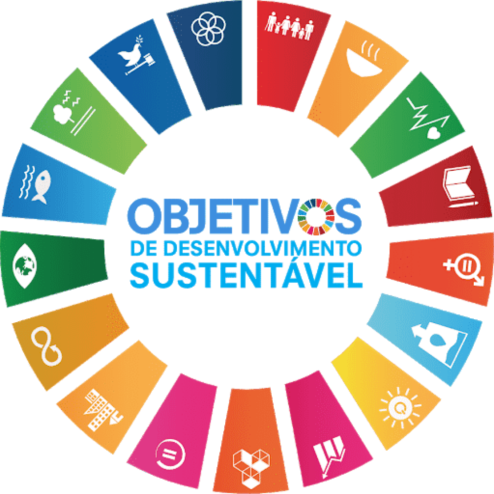

Clube dos Tenistas da Bahia: Guia Completo de Captação de Recursos e Impacto Social
Clube dos Tenistas da Bahia

Missão Azul do CTB
O Clube dos Tenistas da Bahia é referência em práticas esportivas, inclusão social e sustentabilidade, conectando pessoas e comunidades através do tênis e projetos de impacto sustentável.